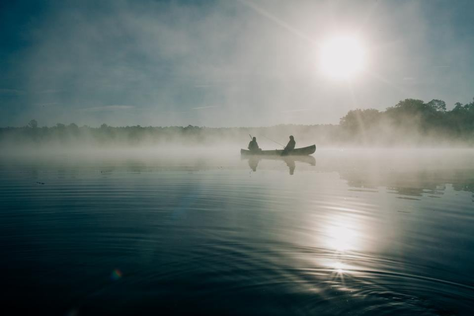

Referenser
Ett urval av uppdrag vi har utfört.
- 2025

Segelbåt på grund vid Utgrunden
En 34-fotare drogs loss i 14 sekundmeter, dykaren kontrollerade kölen och båten bogserades till Kalmar.
- 2025

Sjunken motorbåt i Borgholm
Båten låg på botten vid bryggan – lyft, länsad och i verkstaden inom fyra timmar.
- 2025

Stormrundan
210 avtalsbåtar kontrollerades och dubbelförtöjdes på ett dygn.
- 2026

Taxibåt i Mönsterås
Ny bränslepump på plats i skärgården så att turen kunde köras vidare samma eftermiddag.
- 2026

Fiskenät i propellern
Dykaren skar loss ett drivgarn från en 40-fotare utan att båten behövde lyftas.
- 2024

Kalmar Gästhamn
Avtal om förtur och länsning för gästhamnens 180 platser under högsäsongen.
De ringde oss en lördagskväll
”Motorn stannade mitt under Ölandsbron med två barn ombord. Efter 25 minuter låg Sjöjouren bredvid oss.”
Bertil Å. · Borgholm”Båten hade sjunkit vid bryggan under natten. Klockan nio stod den på trailer, och försäkringsbolaget hade bilderna före lunch.”
Anders P. · Kalmar”Jourkortet har betalat sig två gånger på tre år. Det lugnar att veta att någon svarar.”